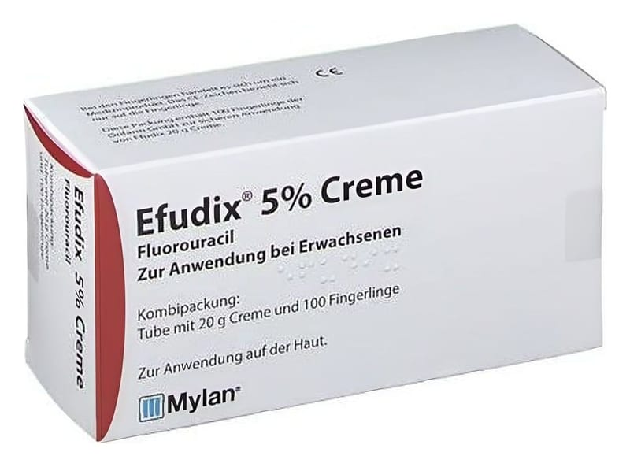

Efudix %5 Krem , 20 g

Ne için kullanılır
KT · Bölüm 1EFUDİX, 20 ve 40 gramlık tüplerde sunulmaktadır.
EFUDİX etkin madde olarak antineoplastik ajanlar ve antimetabolitler olarak bilinen bir ilaç grubundandır ve %5 konsantrasyonda fluorourasil içerir. Fluorourasil, tahribata yol açan anormal hücre büyümeleriyle etkileşerek iş görür.
EFUDİX, anormal hücre büyümesinin neden olduğu, farklı tiplerde keratozlar, keratoakantoma, Bowen hastalığı ve yüzeyel bazal hücreli karsinoma vakaları gibi bazı basit cilt kanserlerini tedavi etmekte kullanılır.
EFUDİX, çok uzun süreli güneş ışınına maruz kalma sonucu, henüz gözle görünmeyen, alt tabakalarda yer alan cilt anormalliklerinin ortaya çıkması durumlarında da (yüzeyel premalign ve malign lezyonlar, kızarıklık ve sulanma ile kendini gösterir) tedavi sağlar.
EFUDİX’in nasıl etki gösterdiğine dair önemli bilgi:
EFUDİX, normal hücreler üzerinde daha az etki gösterirken, kanser hücreleri ve anormal hücreleri yok eder. EFUDİX kullandığınızda, ilacı uyguladığınız cilt alanının kızarması olasıdır. Bunu muhtemelen yangı/şişlik, rahatsızlık hissi, cilt erozyonu (yüzeyel yara) ve nihayetinde iyileşme takip edecektir. Bu, beklenen normal tedavi yanıtıdır ve EFUDİX’in etkili olduğunu gösterir.
Bazı durumlarda yanıt daha şiddetlidir (bkz. Bölüm 4. “Olası yan etkiler nelerdir?”). Cilt belirtilerinizin şiddetlenmesi durumunda, ağrınız varsa veya endişeliyseniz doktorunuza danışınız. Doktorunuz rahatsızlığınızı gidermek için başka bir krem reçeteleyebilir.
Tedaviniz tamamlandıktan sonra, cildinizin 1 ila 2 ay içerisinde tam olarak iyileştiğini görebilirsiniz.